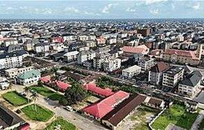

Prosper Chidike Nwogu
About Me
My name is Prosper Chidike Nwogu. I am a student at Brigham Young University - Idaho, majoring in Web Design and Development. I have a passion for creating dynamic and user-friendly web applications. In my free time, I enjoy learning new programming languages and exploring the latest trends in web development.
Abia State, Nigeria

Abia State is located in southeastern Nigeria. Its capital is Umuahia, while Aba is one of its major commercial and industrial centres. Abia is known for its rich culture, hardworking people, and vibrant business community.